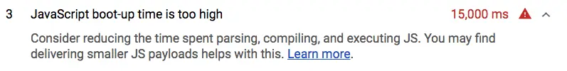

Short answer
Heavy JavaScript can delay interaction, but the HTML still has to contain the primary text.
A lab audit that flags long script execution is a rendering note. It is not proof the page lacks content, and it is not a score to publish. If view-source is a shell, the health finding is the shell even when the script is small. If view-source is complete and the script is huge, the finding is the script’s cost to interaction.
Definition
Code splitting, when it keeps the first response smaller without removing the document’s text, belongs with this note. Splitting that leaves the words inside a chunk the crawler never treats as the document does not solve discovery. SEO Health separates those outcomes on a sample URL.
What rendering changes for a crawler
Check raw HTML for the primary text first, then note script cost as a separate line if the text is already there.
Third-party tags are a common source of weight that the template does not need for the first paint. They are discussed as their own loading-order problem. The audit should not recommend deleting the product copy to “save JavaScript.” The copy is the document. The script is the extra.

What to check
- Primary text present in raw HTML
- Script cost noted only as a second line when text exists
- Chunks that hide the only copy of the words
- One configurator or product URL as the sample
- No score copied from a lab picture
A practical example
A configurator’s HTML includes the product name and the option labels, and a large visualization library loads for the 3D view. The health note praises the HTML and records the library as interaction cost on that URL. A second template that puts the option labels only in the library is a different, more serious finding.
What this does not claim
Reducing script weight does not guarantee rankings or citations.
Where Mika Visibility files this
Mika Visibility treats rendering as an SEO Health question: can the important HTML be fetched and compared with and without JavaScript when the template depends on it. That comparison is not a GEO audit and not a market-coverage plan. Findings stay attached to sample URLs. A re-audit after the template change is how the team checks the repair.
The audit illustration is a tool surface. It is not a measured result for a named site.
FAQ
What must exist before script weight matters?
Heavy JavaScript can delay interaction, but the HTML still has to contain the primary text.
How should the two findings be ordered?
Check raw HTML for the primary text first, then note script cost as a separate line if the text is already there.
Does less JavaScript guarantee rankings?
Reducing script weight does not guarantee rankings or citations.
Next step
Run a structured SEO + GEO audit to see health findings, growth gaps, and a blueprint you can act on.
Clearer entities, answers, evidence, and context make pages easier to understand and reference. Results in any answer product are not guaranteed.